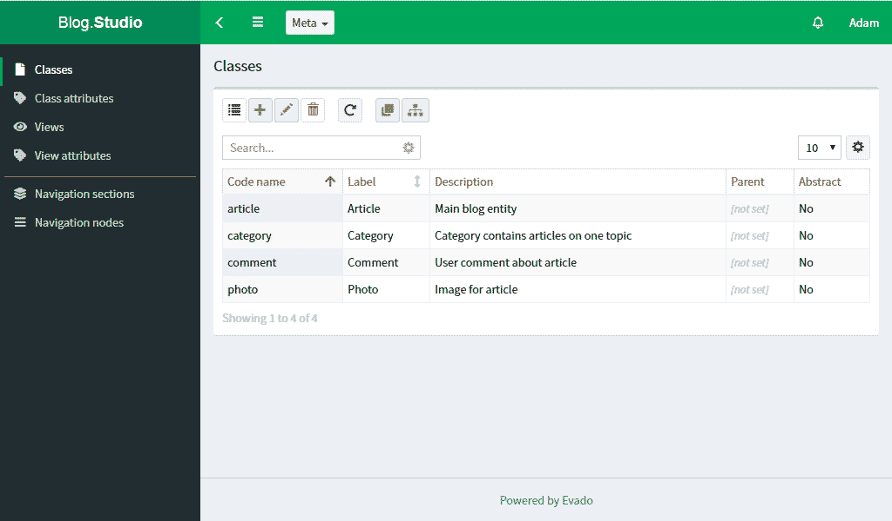

Модуль Студия
В Студии создаются метаданные, описывающие структуру приложения. Создаваемые данные находятся в отдельном хранилище. Метаданные необходимо экспортировать, чтобы они стали использоваться приложением.

Экспортировать можно все данные разом через верхнее меню Meta/Export.
Либо экспортировать отдельные сущности (классы, представления, навигация) из формы редактирования.
Это быстрее, но может быть нарушена целостность данных, если изменения были где-то еще.
Данные будут сохранены в формате JSON-файлов по указанному пути
и автоматически перезагружены в память сервера.
Экспортировать можно в любое место внутри папки meta.
Однако приложение будет загружено только из meta/app.